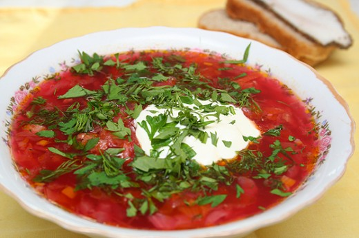

Ukrainian Recipe
Name: Borsch
Ingredients:
- 1 lbs of beef
- 1/3 medium head of cabbage
- 4 potatoes
- 1-2 onions
- 1 carrot
- 1-2 beets, boiled or canned
- 2 tablespoons tomato paste
- salt
- dill
- parsley
- 1-2 laurel leaves
- sour cream
Steps:
- Put beef is water.
- Boil the water.
- Cook the beef broth.
- When the meat is ready, remove it from the broth.
- Add sliced potatoes and cabbage to the broth and cook them.
- While the cabbage and potatoes are cooking, prepare the basis for the borscht: chop carrot, onions and beets.
- Fry carrot and onions in butter.
- Add beet and tomato paste to carrot and onions, stir everything, and leave to simmer on the low-medium heat until ready.
- As soon as vegetables are ready, add them to the broth with cooked cabbage and potato, stir, add sliced meat, dill and parsley and heat it for 5 more minutes.
- Add laurel leaves and let it stand for 5-10 minutes before serving.

Buy these missing ingredients